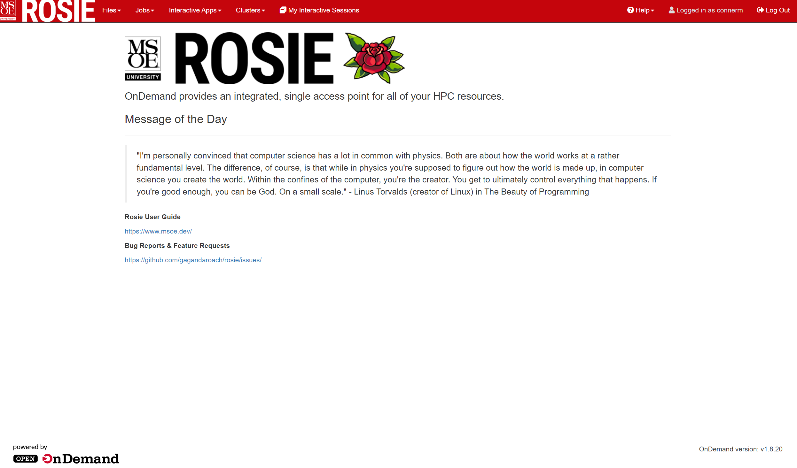
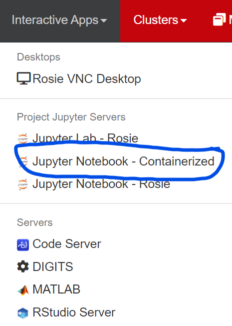
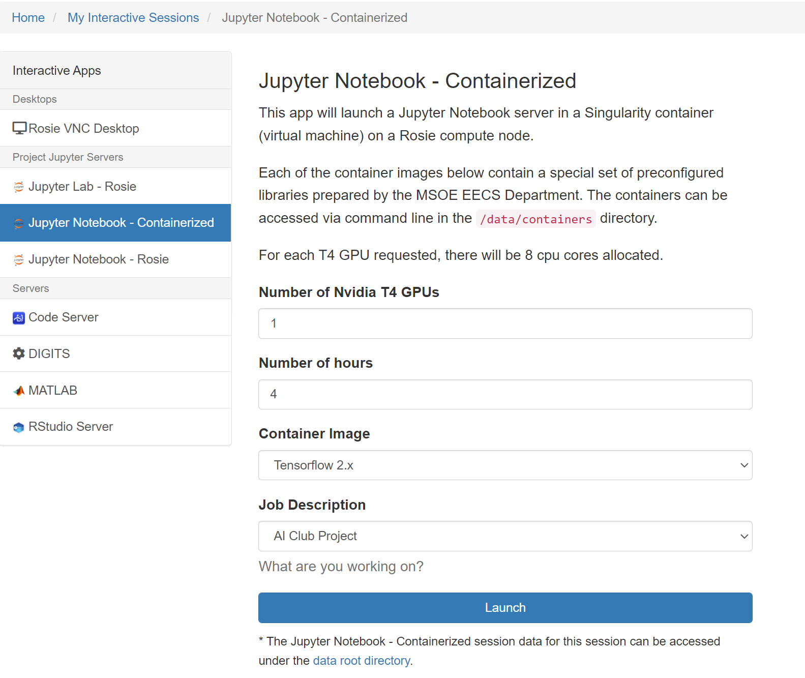
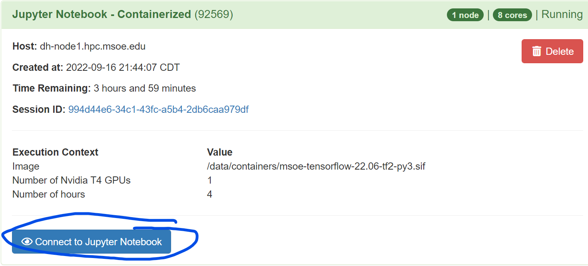
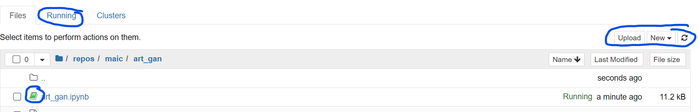
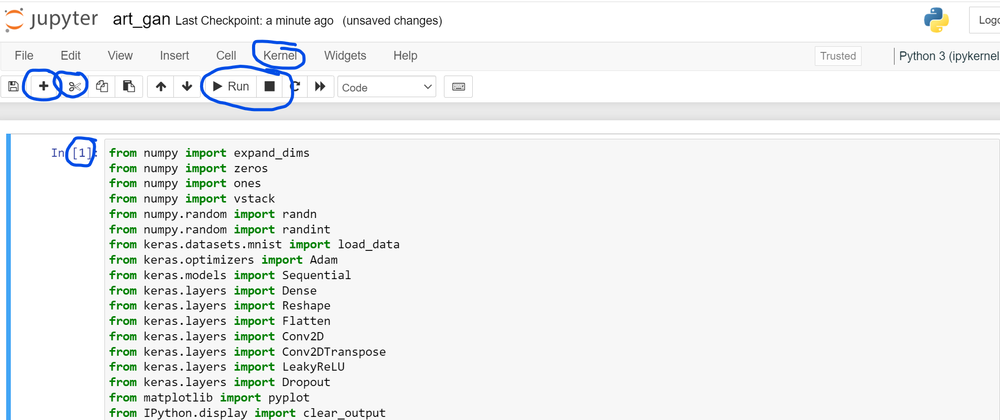
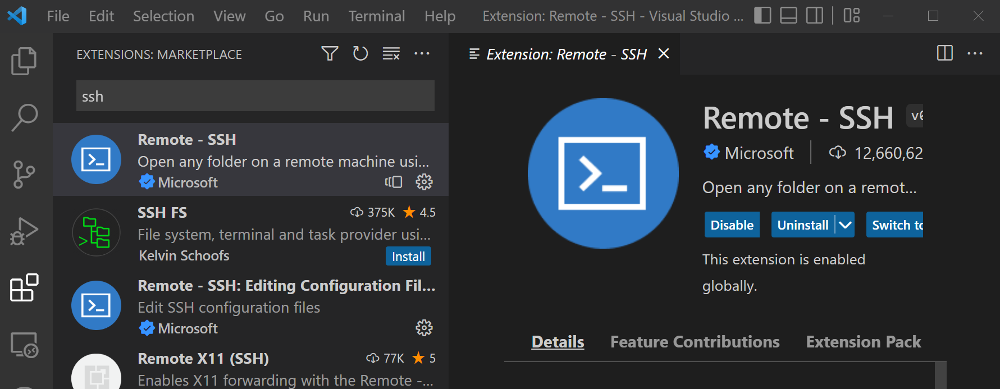
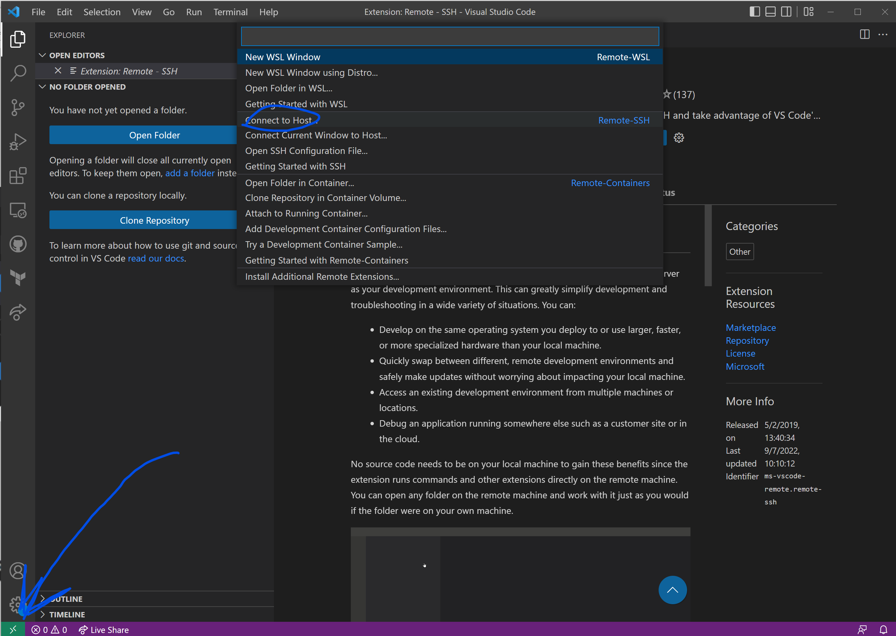

The official but lacking rosie guide can be found here.
In order to gain access to Rosie, you must fill out the request form that is linked on this page.
Under the section "Please describe why you are requesting access to Rosie. In this description, please include why Rosie is needed beyond what your campus-issued laptop provides"
you may put "AI club workshops".
Under the section "Please select all of the tools you need", select Jupyter CPU-based Notebooks, Jupyter GPU-based Notebooks, Command Line, and Tensorflow/Keras. Plus any other tools you will need.
Under the section "If you plan to use GPUs, please describe what acceleration libraries you need.", enter tensorflow/keras
Under the section "How much storage do you require (list MB, GB, TB)?" Enter what amount applies to yo.u
If you do not know how much storage you will need, 10GB is a reasonable amount.
After requesting access you will likely get a response from Dr.Retert between 12am and 4am with instructions on logging in for the first time.
Logging onto Rosie for the first time sucks, see more details below
In order to log in to Rosie for the first time and reset your password, you must do so via SSH.
To use SSH you will need an SSH client. My tool of choice (that you will need for other classes as well) is Git
Start by downloading and installing git from here.
Open up the new program you have called git bash. Then enter the following command, replacing username with your username (beginning of your email)
$ ssh username@dh-mgmt2.hpc.msoe.edu
You will then see a screen like the image below, for each number in the image you will:
Rosie can only be accessed from the schools network.
Therefore if you would like to log in to Rosie from offcampus you must use a VPN.
The VPN MSOE uses is called Global Protect and can be downloaded from here.
Choose the Windows 64bit download and follow the installation instructions
When you first open global protect, you will need to enter the address you wish to connect to at the bottom of the window
For us, this is vpn.msoe.edu
When you hit connect you may be asked for your msoe credentials.
Afterwards your global protect window will say you are connected. Then you're good to go!
The simplest way to interact with Rosie (what you'll likely learn in classes) is via the web portal.
I think this way is bad and almost never use it, but it's simple and good to know.
If you are off campus, make sure to VPN onto MSOE's network with Global Protect as described in the Global Protect section above.
First, open the Rosie web portal here.
You'll have to enter your Rosie login credentials as well (note that these are not the same as your msoe email login unless you set them that way)
You should then see a page that looks like the image below

Next you'll want to select the Interactive Apps dropdown at the top of the page and select the Jupyter Notebook - Containerized option.

Then you can select your number of GPUs (only do one unless you know what you're doing), and time to have your allocation (pick something reasonable, you can always start another).
For container image, select Tensorflow 2.x
For Job Description, select AI Club Project or Other
Finally hit launch

Once you hit launch, wait for your resources to be allocated (the blue stuff will turn green), then hit Connect to Jupyter Notebook

After hitting launch you'll see a file explorer which will show your Rosie home directory. From here you can select a notebook to run.
I would suggest first creating a repos folder, and then a subfolder for maic (this is also a good spot to put folders for different classes like CS 2300)
To create new directories, go to the New dropdown at the top right of the file explorer and select Folder
Afterwards you can check the box next to the new Untitled directory on the left and select Rename which will appear under the Files | Running | Clusters tabs.
You can use the Upload button to upload your own files, or hit New > Python 3 (ipykernel) to create a new jupyter notebook.
When you open a notebook, if you go back to the file explorer you'll notice that the notebook icon on the left has turned green, this means you Rosie session is using resources to have that notebook running.
If you hit the Running tab at the top of the page you can check if you have multiple notebooks running. Having multiple notebooks running is a bad idea so this menu can help you shut down all notebooks but the one you want to run.

Once you open a notebook, you can start running cells like normal.
Type some code in and hit Shift+Enter to run the cell (or the play icon by the top of the screen), you can tell a cell is running because a [*] will be displayed next to the cell, when it finishes the * will be replaced with a number.
To insert a new cell, use the Alt+Enter command or hit the plus by the top of the screen.
To delete a cell, highlight the cell (so it is highlighted blue and not green), and press the D key twice, or hit the scissors by the top of the screen.
If you run into issues running code, you can restart by opening the kernel menu and selecting restart.
Make sure to periodically hit Ctrl+S to save your notebook as well, you can see when your notebook was last saved at the top of the screen.

From here on everything is completely optional and more difficult than just using the GUI from the section above, but these tools can be nice.
First you'll need to install the SSH extension for VSCode, open up the extensions panel, search SSH, and install the Remote - SSH extension.

Next, you'll want to hit the small green icon on the bottom left of the VSCode window to bring up the SSH menu,
then select Connect to Host,
then hit + Add New SSH Host...
Then enter dh-mgmt2.hpc.msoe.edu
If prompted for the platform of the remote host, select Linux
You should see a popup on the bottom right of the screen saying Host Added!

You can then go back to the small green icon, select Connect Current Window to Host..., and select dh-mgmt2.hpc.msoe.edu
You will then be prompted for your password, enter your Rosie password
Your VSCode may take a few seconds to do some setup, once it's done the file explorer should open on the left of the VSCode window
In the file explorer, select Open Folder, and choose the folder you'd like to work in (I usually just open my home folder), you will be prompted for your password again
From here you can edit files and use the Rosie terminal right in VSCode!
This is a (better) alternative to the Rosie dashboard and Google Collab for running Jupyter notebooks. Start by opening a terminal in VSCode AFTER connecting via ssh.
You can open a terminal by going to the toolbar and pressing Terminal > New Terminal, or by holding ctrl and the key to the left of 1 (the tilde key).
Once a terminal is open, run this command if you haven't already:
/data/ai_club/util/setup
This command lets you use more commands made by MAIC (jernel in this case). After running this command, you have to exit this terminal and start a new one for this to work.
Afterwards, you need to install the "Jupyter" extension within VSCode. Even if you've already installed it locally, you'll have to go through the installation process once again to install it on the Rosie side of things.
Next, open or create a Jupyter notebook (.ipynb extention) in vscode. With the notebook open, in the bottom bar of VSCode and towards the right, you should see a button that says something like "Jupyter Server: Local." Take note of its existence, but there is no need to press it yet.
Now, with a new terminal open, run this command:
jernel
"Jernel (Jupyter kERNEL)" is a MAIC-made tool for starting juyter servers on rosie. The default options should be fine for most cases, but you can run jernel -h to see what options you have. An example usage of options could be jernel --time 0-2:0 to run the server for two hours instead of one.
Once Jernel outputs a URL, ensure your notebook is open and press the "Jupyter Server: Local" button. You will be prompted to enter a URI, and this is where Jernel's output should go. After copying and pasting, press enter and the prompt should go away.
There is one more thing to do before running Juyter notebook cells. You have to set the notebook's kernel to use the server. To do this, press the button near the upper right which should say a python version. Doing so should allow you to select a kernel; select the one which says "Remote" in the same row as the kernel name.
In general, this process only involves running jernel and connecting a notebook once all setup has been done.
/data/ai_club/util/setupjernel to start a jupyter server.